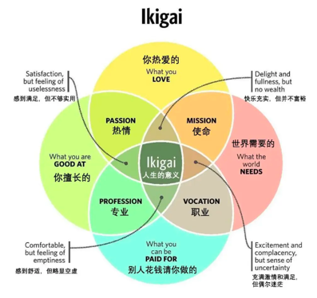

Welcome to Amy's Secret Garden
Hello, world. Amy created the "Secret Garden" in June 2024 to rebuild and rediscover herself. She is self-reflective and truth-seeking through the lens of knowledge and observation, while also enjoying fun and a bit of challenge.
Milestones in Self-Discovery and China's Transformation 自我成长与中国时代变迁
Books
Hobbies
Chess
Self Discovery
My Personal Journey from Village in China to the US 9.25
Emotional Journey 10.1
Productivity Improvement based on Emotional Analysis 10.7
Carefree Spirits 10.8
Self Reflection 10.9
Rebel 10.13
Belief System & Emotional Violatility 10.14
Gender & Identity Struggle 10.15
Dating & Emotional Develop 10.16
Mental Recovery Milestone 10.22
ADHD is not my Fault 10.22
Scarcity in attention 10.28
Interpersonal Relationship 10.30
Intimacy 11.7
Awake 11.20
Ikigai

ENTP Personality
Self development & Growth
Workshops & Training sessions
Interview Series
What is this for?
Father 爸爸
Mother 妈妈